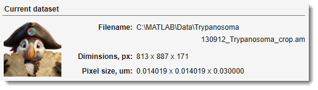
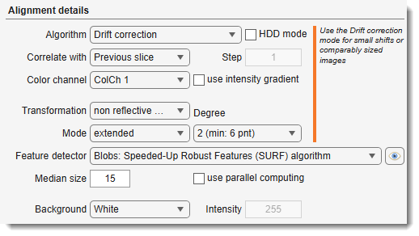
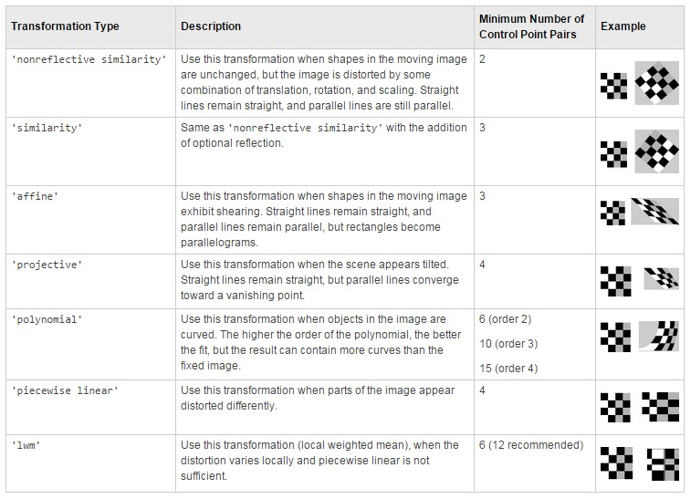
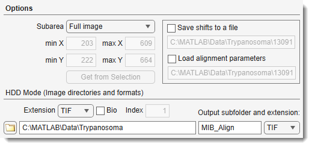
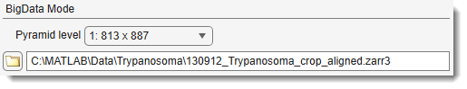

Alignment and Drift Correction¶
Back to MIB | User interface | Ribbon | Dataset
Algorithm compatibility¶
The table below lists the available alignment algorithms and the dataset modes each supports:
- Standard — the dataset is loaded into memory (the default mode); all algorithms are available.
- HDD — image files are aligned directly on disk without loading into MIB (suitable for large image collections); enabled with the checkbox. See Alignment details.
- BigData — disk-backed pyramidal OME-Zarr v3 (whole-slide / gigapixel) datasets; a new aligned store is written to disk. See BigData datasets.
| Algorithm | Standard | HDD | BigData |
|---|---|---|---|
| Drift correction | ✔ | ✔ | ✔ |
| Template matching | ✔ | ✘ | ✔ |
| Automatic feature-based, version 1 | ✔ | ✔ | ✘ |
| Automatic feature-based, version 2 | ✔ | ✔ | ✔ |
| Single landmark point | ✔ | ✘ | ✔ |
| Three landmark points | ✔ | ✘ | ✔ |
| Landmarks, multi points | ✔ | ✘ | ✔ |
| Color channels, multi points | ✔ | ✘ | ✘ |
| AMST: median-smoothed template | ✔ | ✘ | ✘ |
BigData landmark modes
In BigData mode the landmark modes take their corresponding points from the Annotation layer, and the Subarea → Selection / Mask options are not used (choose Full image or Manually specified).
Overview¶

The Alignment and Drift Correction tool aligns the slices of the currently opened dataset.
- How to do image alignment
- Multi-point landmarks
- Automatic feature-based
- Automatic feature-based using HDD mode
- HDD mode (Drift correction and Automatic feature-based only)
Current dataset panel¶

The Current dataset panel displays details of the currently opened dataset, such as its filename, dimensions, and pixel size.
Alignment algorithms¶

Select the alignment algorithm from the dropdown.
Drift correction¶
Translation correction; recommended for small shifts or comparably sized images. Also implemented for image files without loading into MIB (see HDD mode).
Template matching¶
Translation correction; best for aligning two stacks when the second stack is smaller than the main stack. Not recommended for the currently opened stack.
Automatic feature-based version 1 and 2¶
Automatic alignment based on features (blobs, regions, or corners) detected on
consecutive slices. The features are registered to find a suitable transformation and the images are aligned accordingly.
Version 2 (based on estgeotform2d)
is recommended.
Transformations:
-
Version 1: based on estimateGeometricTransform supports:
similarity,affine,projective -
Version 2: based on estgeotform2d:
- translation: 2-D translation
- rigid: nonreflective rigid (translation + rotation)
- similarity: nonreflective similarity (translation + rotation + scaling)
- affine: general affine
(see more about various transformation types)
Results can be cropped () to the first image's size/position or extended ().
Use to check and modify detection of points.
See matchFeatures for details.
Also implemented for HDD mode.
Feature detectors (see more on different point feature types):
- Blobs: Speeded-Up Robust Features (SURF): robust, fast, less effective for highly detailed targets (e.g., electrical boards)
- Blobs: Detect scale invariant feature transform (SIFT): scale-invariant feature transform
- Regions: Maximally Stable Extremal Regions (MSER): Maximally stable extremal regions algorithm
- Corners: Harris-Stephens: more efficient than the minimum eigenvalue algorithm
- Corners: Binary Robust Invariant Scalable Keypoints (BRISK): similar to ORB, slightly more CPU-intensive
- Corners: Features from Accelerated Segment Test (FAST): fast, extracts many keypoints, not rotation-invariant
- Corners: Minimum Eigenvalue: uses minimum eigenvalue metric to determine corner locations
- Oriented FAST and rotated BRIEF (ORB): rotation-invariant, best for general use, comparable to SURF
AMST: Alignment to Median Smoothed Template¶
Compensates for slight local deformations in 3D electron microscopy datasets.
Pre-align with Drift correction, then register against a median-smoothed Z copy.
Based on Hennies et al., 2020.
- : number of Z-sections for smoothing.
- : configure parameters (see imregtform).
Single landmark point¶
Manual mode; mark corresponding areas on consecutive slices using the Brush tool (spot) or Annotations tool. Images are translated to align marked areas.
Landmarks, multi points¶
Align based on multiple marked points using the Selection layer or Annotations (recommended).
Corresponding points must have the same name. 
Transformation types:

Three landmark points¶
Manual mode; mark three corresponding areas on consecutive slices with the Brush tool.
Images are translated/scaled/rotated to align.
Recommendation
Use Landmarks, multi points instead.
Color channels, multi points¶
Register individual color channels using Annotations (Segmentation panel → Annotations):
- annotation text identifies corresponding points
- annotation value identifies fixed (1) and transformed (2) channels
Color Channel alignment example

Alignment details¶
- : align files specified in
Options → HDD Mode (Image directories and formats)without loading into MIB. Suitable for large image collections.
Only for "Drift correction" (same size required) and "Automatic feature-based" algorithms.
: reference slice options
- Previous slice: align each slice to the previous one.
- First slice: align all to the first Z-slice; good for drift correction with minimal dataset changes.
- Relative to: align each slice to an earlier slice, defined by .
: select the color channel for alignment.
: use intensity gradients instead of raw images for better alignment.
: define background after alignment:
- White: all background pixels white.
- Black: all background pixels black.
- Mean: average value of original dataset pixels.
- Custom: specify a custom intensity.
Options panel¶

: defines the image area used to calculate alignment shifts:
- Full image: use the entire image (default).
- Manually specified: restrict to a sub-region defined by , , , , or .
- Selection: calculate from selected areas only. Use the Brush tool to mark distinct areas on the first and last slices, then interpolate with I or
Ribbon → Selection → Interpolate as Shape. - Mask: calculate from masked areas only.
: save/load translation shifts to disk.
HDD Mode (image directories and formats) panel: used when HDD Mode is enabled
- : file extension to align.
- : enable Bio-Formats reader for microscope formats.
- : series index to load from a container [Bio-Formats only].
- : select directory with images.
- Output subfolder and extension: specify output subfolder (relative to input) and file format.
BigData datasets¶
When the current dataset is a BigData store (a disk-backed pyramidal OME-Zarr v3, opened for whole-slide / gigapixel data), alignment works differently because the source pyramid is read-only and its canvas is fixed:
- Alignment writes a new aligned
.zarr3store to disk (plus a siblingLabels_<name>.zarr3when a model exists) and switches the current buffer to it. The original store is left untouched and acts as the backup — there is no in-place undo for BigData alignment. - Transforms are computed at the chosen level and scaled to full resolution; the aligned image is then streamed slice-by-slice, so memory use stays low even for very large slides.
- The image, model, mask, selection and annotations are all aligned together and stay registered at every zoom level.

A dedicated BigData panel replaces the HDD Mode panel:
- : the pyramid level used to compute the shifts/transforms. Coarser levels are much faster but quantise the result;
<auto>picks the level nearest ~3000 px wide. Choose level 1 for the most precise shifts. - : path of the new aligned
.zarr3(prefilled as<name>_aligned.zarr3); use to change it.
Supported in BigData
- Drift correction
- Template matching
- Automatic feature-based version 2
- Landmark modes (Single / Three / Landmarks, multi points). For landmark modes the corresponding points are taken from the Annotation layer.
Not supported:
- Automatic feature-based *version 1
- AMST
- Color channels, multi points
- the Subarea → Selection / Mask options are not used (choose Full image or Manually specified).
Precision vs. speed
Analysis at a coarse level quantises shifts to roughly that level's pixel size. If sub-pixel accuracy matters, pick a finer Analysis level (at the cost of speed).
References and Acknowledgements¶
The alignment algorithm is based on:
- JC Russ, The image processing handbook, CRC Press, Boca Raton, FL, 1994.
- JD Sugar, AW Cummings, BW Jacobs, DB Robinson, A Free MATLAB Script For Spatial Drift Correction, Microscopy Today, Volume 22, Number 5, 2014. Link
Back to MIB | User interface | Ribbon | Dataset